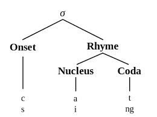
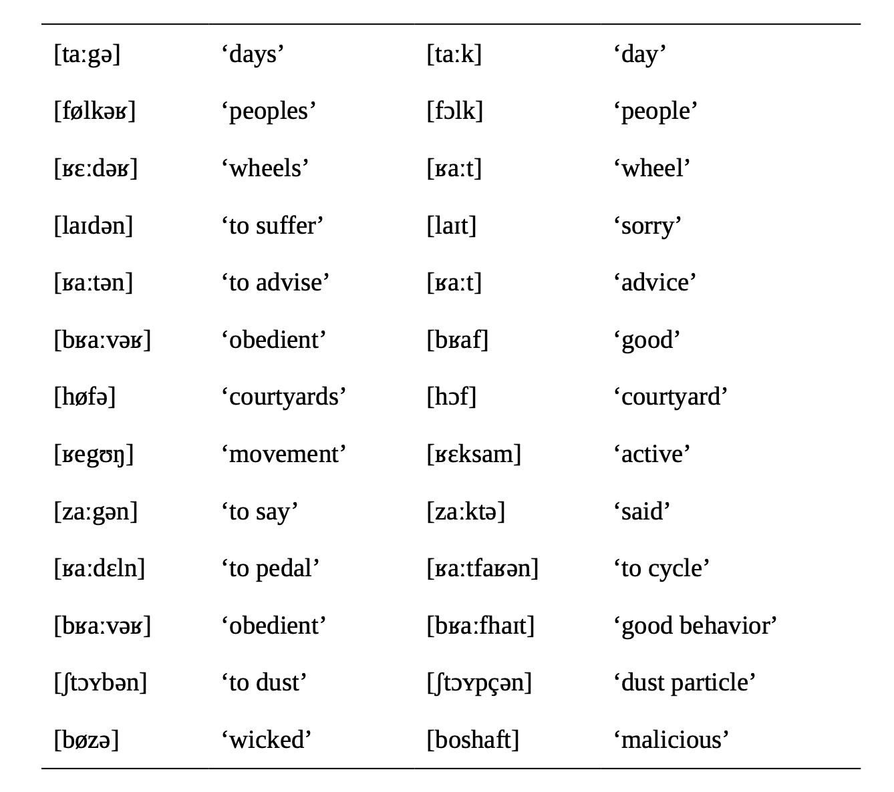
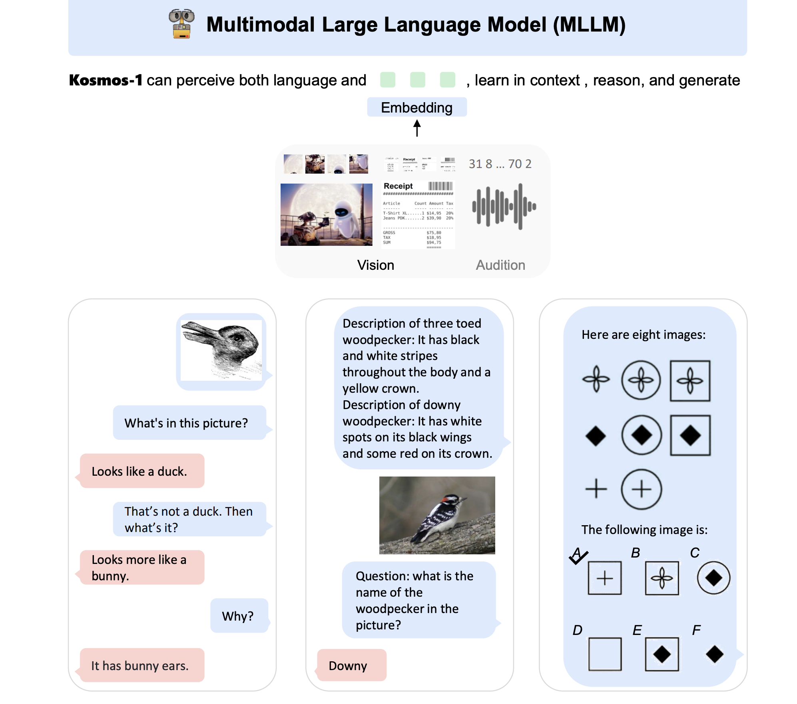
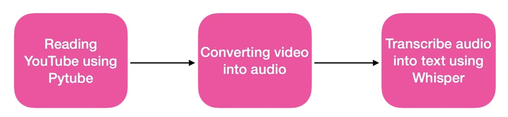

Week 4 語音的世界 (2)
今天的主題
語音轉寫與自動辨識應用
音韻學基本概念與分析 (+ 上次的題目討論)
基本概念
- Phoneme vs. Allophone
- Sounds in contrast
- Minimal pair
- Complementary distribution
- Free variation
- Consonant phonemes
- Vowel phonemes
基本概念
Phoneme: a contrastive sound or category of sounds within a language
Inventory: the set of phonemes (sounds) in a language.
Allophone: a variant of a phoneme
Phonotactics: the rules governing the combination of phonemes in a language (e.g. no two consonants can occur together in English)
Alternation
an alternation is the phenomenon of a morpheme exhibiting variation in its phonological realization. Each of the various realizations is called an alternant. The variation may be conditioned by the phonological, morphological, and/or syntactic environment in which the morpheme finds itself.
alternation 是個語言學術語，不是音韻學術語
- sense alternation: regular polysemy; metonymy
Phonological analysis (1)
phoneme vs allophone
Syllable and Phonotactics
Syllable structure
Sonority scale
Syllabification
Phonotactic constraints
音節 | syllables
音節結構 - Onset - Nucleus - Coda

Features, Rules, and Derivation
- Feature and natural class
- Form of phonological rules
- Rule and derivation
Example rule
一個規則中，通常包括 target (the segment(s) which the rule applies to) 和 a restructuring (what the rule does to the target)，以及一些 environment (the conditions under which the rule applies).
- Rule 1 (for English plural):
[z] → [ə] before [i] and [u] - Rule 2:
[n] → [m] __ [velar]
How to solve phonological problems
練習 1
Indonesian

- Identify each alternant of the Indonesian prefix.
- Identify the conditions under which each alternant appears.
- Construct rules that produce the various alternants of
/meŋ-/
練習 2
German neutralization - which roots alternate? what generalization can you make about the alternating and non-alternating roots? 
重音與音調
Rules of Stress and Intonation
- Word stress
- Simplex words
- Complex words
- Compound words
- Sentence stress
- Intonation
上週作業討論
變調
語音題目可以怎麼設計？
- 聽音辨音轉寫
- 聲譜圖對應分析
- ?
一般的語言分析題目類型
- 翻譯 | Translation
- 對應 | Correspondence
- 填空 | Fill in the blanks
- 非自然語言| Non-language
如何解題
how to solve phonological problems (and turn them into puzzles)
Make observation
Form a hypothesis (better with linguistic background)
Test the hypothesis
How to test
- Does it conform with the data?
- What if the data don’t match?
- Weaken the hypothesis
- Give the exceptions explanations
- Abandon the hypothesis altogether
聽寫練習
布農巒群方言
- 請助教先說明一下
機器即將做得比人好
進入新的人機協作時代
大型語言模型 (e.g. chatGPT) 與整合型的大型基礎模型 (foundation model)（即將）改變了社會生活與教育的面貌。
大型基礎模型 (a.k.a. 大型預訓練多模態語言模型))

語言邏輯的重要
in-context learning: a new NLP paradigm that allows language models to learn tasks given only a few examples in the form of demonstration.
從怎麼下 search query，到怎麼給 prompt。
練習用 chatGPT 來解題
怎麼讓機器解出題目來？以上週作業爲例。
語音也可以
- OpenAI’s whisper is an open-source, multilingual, general-purpose speech recognition model by OpenAI, trained on 680,000 hours of multilingual data collected from the web. (with 100 languages supported)
自動轉寫練習
Speech to Text/Transcription with OpenAI’s whisper 
lab：開啓後，請見建立【副本】再行編輯與執行。
聲音的視覺化 with Praat
- 一個 免費、跨平台的語音分析軟體，由荷蘭阿姆斯特丹大學的 Paul Boersma 和 David Weenink 維護。
本週作業 (week4.assignment)
自行從 NACLO 或 UKLO 中選擇一個題目，自己解完之後（對答案），設法讓 chatGPT (or GPT-4) 來解題，並且將此過程記錄下來，寫成文檔上傳。
- 記錄的內容
- 題目 (來源、類型)
- 解題過程與時間，以及給機器的 prompting chains）
- 解題結果（人與機器的正確率）
- 討論
- 你或機器 (錯誤的原因)
- 與其他想法
- step-by-step / chain-of-thought